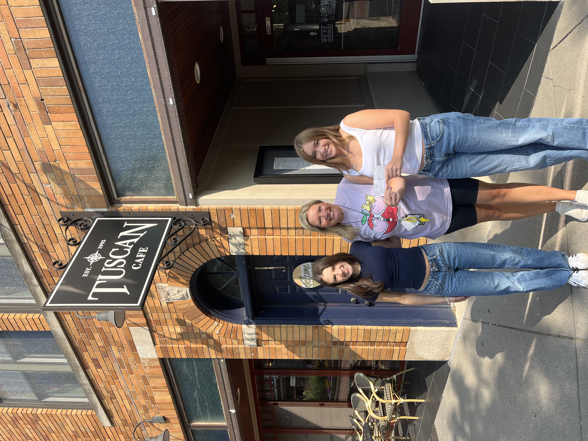

Coffeeshop Concerts
In the spring of 2023, I started a concert series hosted in local cafes with goals of providing performance experiences for aspiring musicians, bringing live music into my community, and giving back to youth music programs through fundraising. Over the past three and a half years, we have hosted over 50 concerts and raised over $4,000 for youth music programs including elementary music education and music therapy for students with special needs.

